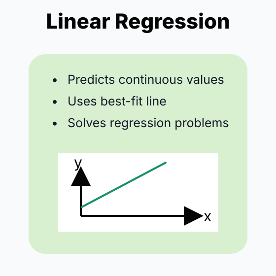

🧮 Linear Regression线性回归
📈 Linear Regression
Linear regression predicts a continuous value by fitting a linear score to data. Lecture 4 frames it as a three-part machine learning recipe: choose a model, choose a loss, then optimize the loss.
1. Concept Understanding
In regression, each training example has features $x^{(i)}$ and a real-valued target $y^{(i)}\in\mathbb{R}$. Linear regression assumes the prediction is a weighted combination of features:
The feature map $\phi(x)$ may be the raw input, the input plus a bias feature, or a polynomial expansion. The problem it solves is: find parameters $w$ that make predicted values close to observed values.
2. Plain-English Explanation
Imagine placing a straight ruler through scattered points. For each point, measure the vertical miss between the ruler and the point. Linear regression chooses the ruler position that makes the total squared miss as small as possible.
The square matters: one very bad miss is punished more than several tiny misses. That is useful for smooth optimization, but it also makes the method sensitive to outliers.
3. Core Intuition
The squared-loss objective is a bowl-shaped quadratic whenever the design matrix has enough rank. The bottom of that bowl is where the gradient is zero, which gives the normal equation.
Feature engineering does not change the core method. A quadratic curve is still “linear regression” after replacing $x$ by $\phi(x)=(x^2,x,1)$. The model is linear in $w$, even if it is nonlinear in the original input.
Lecture 4 also shows why this is not the right loss for classification: MSE keeps penalizing examples that are already confidently correct.
4. Visual Reading Guide

5. Key Equations
What it does. Chooses weights whose predictions stay close to the targets under squared error.
Explain 解释
- $w \in \mathbb{R}^d$ weight vector being optimized — one weight per feature 待优化的权重向量 —— 每个特征一个权重
- $X \in \mathbb{R}^{n \times d}$ design matrix; row $i$ is feature vector $x_i^\top$ 设计矩阵；第 $i$ 行是特征向量 $x_i^\top$
- $Y \in \mathbb{R}^n$ vector of target values $(y_1, \ldots, y_n)^\top$ 目标值向量 $(y_1, \ldots, y_n)^\top$
- $Xw \in \mathbb{R}^n$ vector of predictions $(\hat{y}_1, \ldots, \hat{y}_n)^\top$ 预测值向量 $(\hat{y}_1, \ldots, \hat{y}_n)^\top$
- $\|\cdot\|_2^2$ squared L2 norm — sum of squared entries L2 范数的平方 —— 各项平方求和
- $\frac{1}{2}$ convenience factor; cancels with the 2 from differentiating the square 方便因子；与平方求导出来的 2 相消
What it does. Points to how the weights should move to reduce squared error.
Explain 解释
- $\nabla_w$ gradient with respect to $w$; same shape as $w$ (a $d$-vector) 对 $w$ 求梯度；与 $w$ 同形状（$d$ 维向量）
- $Xw - Y \in \mathbb{R}^n$ residual vector — predictions minus targets 残差向量 —— 预测 − 真实
- $X^\top \in \mathbb{R}^{d \times n}$ transpose of the design matrix 设计矩阵的转置
- $X^\top(Xw - Y)$ column-by-column inner product of features against the residual 各列特征与残差的内积
What it does. Solves the zero-gradient condition directly when the matrix inverse exists.
Explain 解释
- $w^*$ optimal weight vector — the minimizer 最优权重向量 —— 使目标函数最小的解
- $X^\top X \in \mathbb{R}^{d \times d}$ Gram matrix — symmetric, positive-semidefinite Gram 矩阵 —— 对称、半正定
- $(X^\top X)^{-1}$ inverse of the Gram matrix; exists iff $X$ has linearly independent columns ($\mathrm{rank}(X)=d$) Gram 矩阵的逆；当且仅当 $X$ 列线性无关（即满列秩 $\mathrm{rank}(X) = d$）时存在
- $X^\top Y \in \mathbb{R}^d$ feature-target correlation vector 特征与目标的相关向量
What it does. Shows squared loss is the likelihood loss implied by Gaussian residual noise.
Explain 解释
- $\varepsilon^{(i)}$ residual noise around the linear prediction 线性预测值周围的 residual noise
- $\mathcal{N}(0,\sigma^2)$ zero-mean Gaussian noise with variance $\sigma^2$ 均值为 0、方差为 $\sigma^2$ 的 Gaussian noise
- $-\log p(Y\mid X;w,\sigma^2)$ negative log-likelihood of the observed targets 观测目标值的 negative log-likelihood
- $\text{constant}$ terms that do not depend on $w$ 与 $w$ 无关的项
What it does. Shrinks weights while fitting the data, making least squares more stable.
Explain 解释
- $\lambda \ge 0$ regularization strength (a hyperparameter) 正则强度（超参数）
- $\|w\|_2^2$ $\sum_j w_j^2$ — sum of squared weights $\sum_j w_j^2$ —— 权重平方和
- $\frac{\lambda}{2}\|w\|_2^2$ penalty term that shrinks weights toward 0 把权重拉向 0 的惩罚项
- $I \in \mathbb{R}^{d \times d}$ identity matrix 单位矩阵
- $X^\top X + \lambda I$ always invertible when $\lambda > 0$ (positive-definite) $\lambda > 0$ 时一定可逆（正定）
6. Worked Examples
For a one-dimensional model $\hat y=w_1x+w_2$, each example becomes a row $[x^{(i)},1]$. The parameter vector is $[w_1,w_2]^\top$. This turns many scalar equations into one matrix product $Xw$.
For two points that both lie on the line $y=2x$, the loss for $\hat y=wx$ is $(2-w)^2+(4-2w)^2$. Differentiating gives $10w-20=0$, so $w=2$. A quick sanity check: both residuals become zero.
When $X\in\mathbb{R}^{n\times d}$ has full row rank and $d\ge n$, every target $Y$ can be fit exactly. There may be infinitely many $w$ values, differing by null-space vectors. Gradient descent from $w_0=0$ stays in the row space of $X$ and converges to the exact solution with the smallest Euclidean norm.
7. Problem-Solving Tips
8. Common Mistakes
- Forgetting the bias column of ones when the model includes an intercept.
- Writing $(X^\top X)^{-1}$ when the matrix may be singular or ill-conditioned.
- Confusing linear in features with linear in parameters. Polynomial features can still use linear regression.
- Using MSE classification as if it were logistic regression. MSE is not calibrated for binary class probabilities.
Operation. For binary classification, encode labels as $\{-1,+1\}$ and predict by thresholding the score: output $+1$ if $w^\top x+b>0$, otherwise $-1$.
- Outlier sensitivity. A point far from the boundary can still create a huge squared loss, even if it is already classified correctly, and can drag the boundary toward itself.
- Masking in multiclass. If class centers line up, a least-squares classifier can let outer classes dominate and effectively ignore the middle class.
- Not a probability. The raw score is unbounded and is not constrained to $[0,1]$, so it cannot be interpreted directly as a class probability.
9. Exam Focus
- Derive the normal equation from the MSE objective.
- Explain the Gaussian-noise / MLE interpretation of squared loss.
- Explain when the closed form exists and why ridge helps.
- Compare ridge and lasso: shrinkage vs. sparsity, and the bias-variance trade-off as $\lambda$ changes.
- Construct the design matrix for a bias term or polynomial features.
- Explain the overparameterized case: exact interpolation, null space, and minimum-norm solution.
- State why linear regression is awkward for classification: outliers, masking, and non-probability scores.
10. Quick Checklist
- I can write the model $\hat y=w^\top\phi(x)$.
- I can derive $X^\top Xw=X^\top Y$ from squared loss.
- I can connect squared loss to Gaussian-noise MLE.
- I know what breaks when $X^\top X$ is not invertible.
- I can add ridge regularization and write its solution.
- I know that lasso can produce sparse weights.
- I can explain why MSE over-penalizes easy classification examples.
📈 Linear Regression · 线性回归
Linear Regression 用线性打分预测连续值。Lecture 4 的主线很清楚：先选 model，再选 loss，最后把 optimization 解出来。
1. Concept Understanding · 概念理解
回归任务里，每个样本有 feature $x^{(i)}$ 和连续标签 $y^{(i)}\in\mathbb{R}$。线性回归假设预测值是 feature 的加权和：
$\phi(x)$ 可以是原始输入、带 bias 的输入，也可以是 polynomial features。它解决的问题是：找到一组参数 $w$，让预测值尽量贴近真实 $y$。
2. Plain-English Explanation · 大白话理解
可以把它想成拿一把尺子去贴散点图。每个点到尺子的竖直距离就是 error。Linear Regression 选择那条“总体最贴”的线，让所有 error 的平方和最小。
为什么平方？小误差影响小，大误差会被放大。这样数学上很顺滑，但也意味着 outlier 会特别有影响力。
3. Core Intuition · 核心直觉
MSE objective 通常是一个 bowl-shaped quadratic。找最优点就是走到碗底；在碗底 gradient = 0，于是得到 normal equation。
Polynomial regression 本质也没变：把 $x$ 换成 $\phi(x)=(x^2,x,1)$ 后，模型对参数 $w$ 仍然是 linear 的。
Lecture 4 还强调：用 linear regression 做 classification 会出问题，因为 MSE 会继续惩罚已经分得很对的 easy examples。
4. Visual Reading Guide · 看图理解
5. Key Equations · 核心公式
这个公式在做什么？ 找一组权重，让预测尽量贴近真实值；误差按平方计算。
Explain 解释
- $w \in \mathbb{R}^d$ weight vector being optimized — one weight per feature 待优化的权重向量 —— 每个特征一个权重
- $X \in \mathbb{R}^{n \times d}$ design matrix; row $i$ is feature vector $x_i^\top$ 设计矩阵；第 $i$ 行是特征向量 $x_i^\top$
- $Y \in \mathbb{R}^n$ vector of target values $(y_1, \ldots, y_n)^\top$ 目标值向量 $(y_1, \ldots, y_n)^\top$
- $Xw \in \mathbb{R}^n$ vector of predictions $(\hat{y}_1, \ldots, \hat{y}_n)^\top$ 预测值向量 $(\hat{y}_1, \ldots, \hat{y}_n)^\top$
- $\|\cdot\|_2^2$ squared L2 norm — sum of squared entries L2 范数的平方 —— 各项平方求和
- $\frac{1}{2}$ convenience factor; cancels with the 2 from differentiating the square 方便因子；与平方求导出来的 2 相消
这个公式在做什么？ 告诉你权重往哪个方向动，squared error 会下降。
Explain 解释
- $\nabla_w$ gradient with respect to $w$; same shape as $w$ (a $d$-vector) 对 $w$ 求梯度；与 $w$ 同形状（$d$ 维向量）
- $Xw - Y \in \mathbb{R}^n$ residual vector — predictions minus targets 残差向量 —— 预测 − 真实
- $X^\top \in \mathbb{R}^{d \times n}$ transpose of the design matrix 设计矩阵的转置
- $X^\top(Xw - Y)$ column-by-column inner product of features against the residual 各列特征与残差的内积
这个公式在做什么？ 在矩阵可逆时，直接解出 gradient 为 0 的最优权重。
Explain 解释
- $w^*$ optimal weight vector — the minimizer 最优权重向量 —— 使目标函数最小的解
- $X^\top X \in \mathbb{R}^{d \times d}$ Gram matrix — symmetric, positive-semidefinite Gram 矩阵 —— 对称、半正定
- $(X^\top X)^{-1}$ inverse of the Gram matrix; exists iff $X$ has linearly independent columns ($\mathrm{rank}(X)=d$) Gram 矩阵的逆；当且仅当 $X$ 列线性无关（即满列秩 $\mathrm{rank}(X) = d$）时存在
- $X^\top Y \in \mathbb{R}^d$ feature-target correlation vector 特征与目标的相关向量
这个公式在做什么？ 说明 Gaussian residual noise 会自然导出 squared loss。
Explain 解释
- $\varepsilon^{(i)}$ residual noise around the linear prediction 线性预测值周围的 residual noise
- $\mathcal{N}(0,\sigma^2)$ zero-mean Gaussian noise with variance $\sigma^2$ 均值为 0、方差为 $\sigma^2$ 的 Gaussian noise
- $-\log p(Y\mid X;w,\sigma^2)$ negative log-likelihood of the observed targets 观测目标值的 negative log-likelihood
- $\text{constant}$ terms that do not depend on $w$ 与 $w$ 无关的项
这个公式在做什么？ 一边拟合数据，一边压小权重，让 least squares 更稳定。
Explain 解释
- $\lambda \ge 0$ regularization strength (a hyperparameter) 正则强度（超参数）
- $\|w\|_2^2$ $\sum_j w_j^2$ — sum of squared weights $\sum_j w_j^2$ —— 权重平方和
- $\frac{\lambda}{2}\|w\|_2^2$ penalty term that shrinks weights toward 0 把权重拉向 0 的惩罚项
- $I \in \mathbb{R}^{d \times d}$ identity matrix 单位矩阵
- $X^\top X + \lambda I$ always invertible when $\lambda > 0$ (positive-definite) $\lambda > 0$ 时一定可逆（正定）
6. Worked Examples · 代表性例题
如果模型是 $\hat y=w_1x+w_2$，每个样本对应一行 $[x^{(i)},1]$，参数是 $[w_1,w_2]^\top$。这样一堆标量方程就合成一个 $Xw$。
两个点都落在 $y=2x$ 上，模型是 $\hat y=wx$。loss 是 $(2-w)^2+(4-2w)^2$。求导得到 $10w-20=0$，所以 $w=2$。检查一下：两个 residual 都是 0。
当 $X\in\mathbb{R}^{n\times d}$ 满行秩且 $d\ge n$ 时，任意 $Y$ 都能被 exact fit。解可能有无穷多个，它们相差一个 null-space vector。从 $w_0=0$ 开始的 gradient descent 会留在 row space 里，最后选出 Euclidean norm 最小的那个解。
7. Problem-Solving Tips · 解题技巧
8. Common Mistakes · 常见错误
- 模型有 intercept 却忘记加一列全 1 的 bias feature。
- 不检查 invertibility 就直接写 $(X^\top X)^{-1}$。
- 把 “linear in features” 和 “linear in parameters” 混掉；polynomial features 仍然可以是 linear regression。
- 把 MSE classification 当成 logistic regression 用；MSE 不是为概率分类设计的。
操作方法. 二分类时可以把 labels 编成 $\{-1,+1\}$，然后用 score threshold：若 $w^\top x+b>0$ 预测 $+1$，否则预测 $-1$。
- Outlier sensitivity. 离 decision boundary 很远、甚至已经分得很对的点，仍可能因为 squared loss 产生巨大惩罚，把边界往它那边拖。
- Masking. 多分类里如果类别中心排成一条线，least-squares classifier 可能让两端类别主导，几乎忽略中间类别。
- Not probability. Raw score 没有限制在 $[0,1]$，不能直接解释为 class probability。
9. Exam Focus · 考试重点
- 会从 MSE objective 推 normal equation。
- 会说明 squared loss 的 Gaussian-noise / MLE 解释。
- 会解释闭式解什么时候存在，以及 ridge 为什么能稳定 inversion。
- 会比较 ridge 和 lasso：shrinkage vs. sparsity，以及 $\lambda$ 对 bias-variance trade-off 的影响。
- 会给 bias / polynomial features 写 design matrix。
- 会讲 overparameterized case：exact interpolation、null space、minimum-norm solution。
- 会说明 linear regression 用于 classification 的问题：outliers、masking、non-probability scores。
10. Quick Checklist · 速记清单
- 我能写出 $\hat y=w^\top\phi(x)$。
- 我能从 squared loss 推出 $X^\top Xw=X^\top Y$。
- 我能把 squared loss 和 Gaussian-noise MLE 联系起来。
- 我知道 $X^\top X$ 不可逆时哪里会断。
- 我能写 ridge objective 和 ridge solution。
- 我知道 lasso 可以产生 sparse weights。
- 我能解释为什么 MSE 会过度惩罚 easy classification examples。